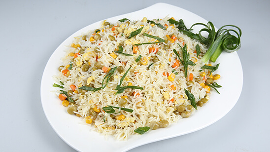

Vegetable Rice Recipe

Here you'll find a recipe of likely the best veg rice
ever, if followed correctly.
Ingredients
- 2 tsp olive oil
- 1/2 onion, diced
- 1 cup white long-grain rice, uncooked
- 1/2 tsp garlic salt
- 1/2 tsp basil leaves, dried (crushed)
- 1/2 tsp ground turmeric
- 2 cups chicken broth
- cup peas and carrots mix, frozen
Steps to Make
- Heat the oil in a skillet over medium heat. Add the
onion and cook 3 minutes, until translucent.
- Add the rice and stir, until the rice is lightly
toasted. Add the garlic salt, basil and turmeric to the
skillet and stir until evenly combined.
- Stir in the chicken broth and bring to a boil. Reduce
heat to a simmer, cover and cook for 10 minutes. Stir in
the peas and carrots, cover and cook for an additional 10
minutes. Fluff with a fork and enjoy!